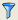

Open with: View > Histogram > property or with the Histogram and Colormap Toolbar.
The histogram window displays a bar chart showing the frequency distribution of a selected property value. You can adjust the x-axis endpoints and binning, the color scheme, and other display options.
The histogram is opened in a new window below the result tab. You may need to resize the window for better viewing. The Histogram selection is not available if there are no properties in your results database (see “Viewing Properties in Calibre RVE for DRC”).
The initial display of the histogram is controlled by the settings on the Setup Histogram and Colormap Options Pane.
Window controls — Use these standard window controls to minimize and maximize the histogram window. If multiple histogram windows are open, use the settings in the Window menu to control how the histogram windows are arranged. You can also undock the Histogram window using the undock icon. The selection Window > Dock All returns all undocked windows to the main display.
Right-click menu — Right-click a histogram bar for a pop-up menu with additional display options. See Table 1 at the end of this topic.
History buttons — Use the history arrow buttons to scroll through previous displays of the histogram.
Update — Click the Update button to apply changes.
Display controls — Select “Data Distribution,” “Color Scheme,” “Endpoints,” or “Y Axis” for controls to adjust different aspects of the histogram display. If the display controls are not shown, right-click in the histogram window and select Show Range Controls.
Menu item |
Description |
|---|---|
Highlight This Bar |
Highlight the results in the bar in a connected layout viewer. |
Show Color Map |
Create a colormap using the display options of the current histogram. All results in the histogram are displayed in the colormap. |
Histogram This Bar |
Create a new histogram of only the results in the bar, using the same property. |
Histogram This Bar By |
Create a new histogram of only the results in the bar, and histogram the results by the selected property. The property range of the selected bar is reported in the top right corner of the new histogram. |
Back |
Display the previous histogram. |
Forward |
Display the next histogram. |
Browse This Bar |
Open a new DRC results tab that displays only the results in the selected bar. The tab name includes the property name. A DRC results filter is applied for the property range represented by the histogram bar. The filter is displayed next to the  icon at the top left, but cannot be edited. If the histogram was created using the Histogram This Bar By selection, the results are filtered by both property values. |
Print Histogram |
As described. |
Save Histogram |
Save the histogram as a PNG image file, a text file, or a comma-separated values (CSV) file. |
Rotate X-Labels |
As described. |
Logarithmic Y Axis |
As described. |
Show Range Controls |
As described. Select “Data Distribution,” “Color Scheme,” “Endpoints,” or “Y Axis” for controls to adjust different aspects of the histogram display. Click the Update button to apply changes. |